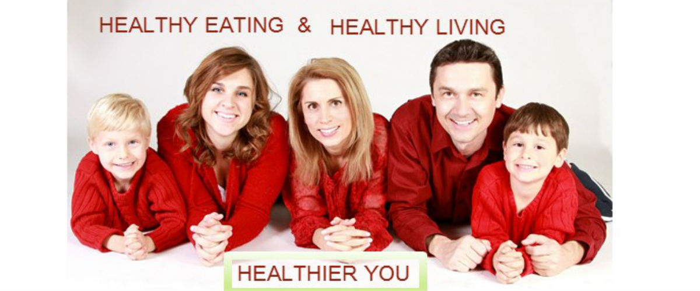

16 easy ways for cutting 100 calories -sounds fantastic!!!
The fact is eating an extra 100 calories a day, you can gain 10 pound extra weight a year. So, how about cutting 100 calories from your daily meal without even realizing it?
Is it possible eating less but you won’t feel hungry? Yes, it does. All you need to do is follow the 16 easy ways for cutting 100 calories. Stick to this strategy as much as you can:
Boost up your metabolism with proteins: Compared to carbohydrate and fat, protein has a high thermic effect close to 30%. Thus your body will burn more calories to digest protein. Introduce a lean protein source such as salmon, chicken, beans, low-fat cheese, peanut butter, hummus into each of your meal and remain energized all day long. Slow digestion of protein meal will prevent your cravings for long. The less you feel hungry, the less you will consume.
Skip processed and fast foods as much as possible as these may contain trans-fat. Trans fats are worst kind of fats for the heart- used widely in processing foods and in restaurants to improve shelf-life or flavor.
Trim skin or fat from the beef or chicken before cooking.
Skip the cheese on your sandwich or burger. Enjoy hummus (a chick pea meal) or avocado instead.
Avoid sugar in your coffee or tea. According to American Heart Association, women should consume less than 100 calories of added sugar (about 6 teaspoons) and men less than 150 calories per day (about 9 teaspoons). Switching from cappuccino to regular coffee is one of the 16 easy ways for cutting 100 calories.
Swap commercial chocolates with a seasonal fruit However, you can enjoy moderate (1 ounce) portions of flavanols-enriched dark chocolate (see also Foods-That-Keep-Heart-Healthy) few times a week to keep your heart healthy.
Swap soft drinks(sugar-sweetened beverages) with drinking water.
Switch whole milk to low fat or fat free milk.
Swap lemonade (a refreshing soft drink with added sugar) for unsweetened iced tea.
Make a habit of taking green tea twice a day. Studies show that polyphenols rich green tea can boost up your metabolism and aid in weight loss.
Dietary fiber contributes zero calories rather aids in your bowels movement. To keep yourself full for longer time, include oatmeal, spinach and other sources of fibers such as fruits and vegetables in your daily meal.
Modify the cooking method: One table spoon of vegetable oil will give you 120 calories. Use no more than 2 to 3 servings of oil a day. While baking use applesauce in place of oil or butter.
Rethink drinking alcohol: A 5 ounce glass of wine will give you 100 calories and if you drink just 2 of them a day, you are gaining extra 1400 calories weekly. Drink water or low-calorie beverages instead.
Watch out the calories of salad dressings: Though salads are healthy but with those dressings or condiments (butter milk, sour cream, mayonnaise) you are in fact gaining extra calories. Use instead low fat, low salt dressings. You can use olive oil, a monounsaturated fat, or fat-free ranch dip too.
Kick out your stress with yoga: Do yoga to knock out the stress. An interesting research findings at MD Anderson Cancer Center of University of Texas also stresses on doing yoga for a better life. In this study, a group of patients with breast cancer participated in 60 minutes yoga, 3 days a week and experienced a sharp decline of cortisol (the stress hormone) with improved ability to engage in their daily activities compared to those who did no yoga.
Be physically active: Exercise is the key to raise up metabolism and burn calories. If you can’t go to gym or do aerobic work out at least make a habit of walking for 45-60 minutes a day, 5 days a week. Avoid sitting for long time, keep yourself engaged in household chores instead.
Finally, take smaller steps toward changing your food habits and life style. Making small strides can reward you in a bigger way. Start trying the above mentioned 16 easy ways for cutting 100 calories off and feel the difference.